大型语言模型评估综述
论文发布日期
作者： 张宇鹏、王旭、王金栋、吴源、杨林怡、朱凯杰、陈浩、易晓媛、王存翔、王一栋、叶伟、张 Yue、常毅、Philip S. Yu、杨强、谢幸
论文版本： arXiv:2307.03109v9，2023 年 12 月 29 日
首次公开： 2023 年 7 月 6 日
说明： 本译文按论文正文的论述顺序编排。正文、章节标题、图注说明均译为中文；原论文中的结构图、表格、密集参考文献和版面信息以对应页截图保留。截图不是替代译文，而是用于核对原文内容、公式、表格和引用关系。
摘要
大型语言模型凭借在各种应用中的前所未有的表现，正在学术界和工业界获得越来越多的关注。随着大型语言模型持续参与科研和日常使用，评估它们的重要性不断提高：评估不仅要覆盖任务层面的能力，也要覆盖社会层面的潜在风险，以便更全面地理解模型。过去几年中，研究者从多个角度对大型语言模型进行了大量考察。本文围绕三个关键维度，对这些评估方法作出系统综述：评估什么、在哪里评估以及如何评估。
首先，本文从评估任务角度概览已有工作，覆盖通用自然语言处理任务、推理、医疗使用、伦理、教育、自然科学与社会科学、智能体应用以及其他领域。其次，围绕“在哪里”和“如何”评估，本文深入讨论评估方法与基准，这些方法和基准是衡量大型语言模型性能的关键组成部分。随后，作者总结模型在不同任务中的成功与失败案例。最后，本文提出大型语言模型评估面临的若干未来挑战。作者希望为大型语言模型评估领域的研究者提供有价值的洞见，推动更强大、更可靠的模型发展。本文的核心观点是：评估应当成为一门独立且重要的学科，用来更好地支撑大型语言模型的研发。相关开源材料持续维护于论文项目页面。
关键词： 大型语言模型；评估；模型测评；基准
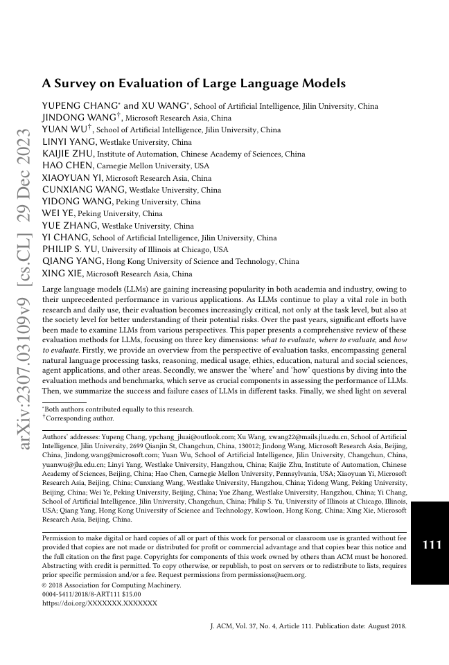
1 引言
理解智能的本质，并判断一台机器是否真正具备智能，是科学家长期关注的问题。人们通常认为，真正的智能应当赋予我们推理能力，使我们能够检验假设，并为未来可能发生的情况做好准备。人工智能研究者关注的是机器产生的智能，而不是生物体产生的智力。恰当的测量有助于理解智能；例如，衡量人类一般智力时，通常会使用智商测试。
在人工智能领域，图灵测试通过辨别回答来自人还是机器来评估智能，长期以来一直是人工智能发展的重要目标。许多研究者认为，能够通过图灵测试的计算机器可以被视为具有智能。因此，从更广的视角看，人工智能史可以被描述为智能模型与算法的创造和评估时间线。每当新的人工智能模型或算法出现，研究者都会通过具有挑战性的具体任务，考察它在现实场景中的能力。例如，20 世纪 50 年代曾被视为通用人工智能路线的感知机算法，后来因为无法解决异或问题而被证明存在根本局限。支持向量机和深度学习的兴起与应用同样伴随着进步和挫折。历史经验说明，人工智能评估极其重要：它可以帮助识别现有系统的局限，并指导更强大模型的设计。
近年来，大型语言模型在学术界和工业界引发了巨大兴趣。已有研究显示，大型语言模型的优异表现使人们看到它们成为这一时代通用人工智能的可能性。与过去只能解决特定任务的模型不同，大型语言模型能够处理多种任务。由于它们在通用自然语言任务和领域特定任务中都表现出较强能力，学生、患者等有重要信息需求的人群也越来越多地使用这类模型。
评估大型语言模型之所以重要，至少有以下原因。第一，评估能够帮助我们理解模型的优势和弱点。例如，PromptBench 基准显示，当前大型语言模型容易受到对抗性提示的影响，因此需要细致的提示设计才能获得更好性能。第二，更好的评估能够为人机交互提供更好的指导，进而启发未来的交互设计与实现。第三，大型语言模型适用范围广，必须确保它们在金融机构、医疗机构等安全敏感领域中的安全性和可靠性。最后，随着模型规模增大并出现更多涌现能力，现有评估协议可能不足以完整衡量它们的能力和潜在风险。因此，本文希望通过回顾现有协议，提升社区对大型语言模型评估重要性的认识，并推动新的评估协议研究。
随着 ChatGPT 和 GPT-4 的出现，研究者从自然语言任务、推理、鲁棒性、可信度、医疗应用和伦理等多个方面评估大型语言模型。尽管已有大量工作，仍缺少覆盖各种评估方向的综合性概览。大型语言模型不断演进，也带来了新的评估对象，既挑战现有协议，也强化了开展全面、多维评估的必要性。有研究声称 GPT-4 已显示出通用人工智能的“火花”，但也有研究认为，这一判断受到人工设计测试的影响，不能直接等同于真正的通用智能。
本文首次对大型语言模型评估进行综合综述，并从三个维度梳理已有工作：
- 评估什么： 研究哪些任务能够体现大型语言模型的能力。
- 在哪里评估： 选择什么数据集和基准来进行测量。
- 如何评估： 在给定任务与数据集后，采用什么评估过程、指标和协议。
本文的主要贡献如下：
- 从“评估什么、在哪里评估、如何评估”三个方面，对大型语言模型评估进行全面概览。这种分类覆盖了评估生命周期的主要环节。
- 在“评估什么”方面，总结不同领域中的任务，并归纳模型的成功和失败案例，为后续研究提供经验。
- 在“在哪里评估”方面，总结评估指标、数据集和基准；在“如何评估”方面，讨论已有协议并归纳新的评估方法。
- 讨论大型语言模型评估的未来挑战，并开放维护相关材料，以推动更好的评估社区。
本文结构如下：第 2 节介绍大型语言模型和人工智能模型评估的基本信息；第 3 节从“评估什么”的角度回顾已有工作；第 4 节讨论“在哪里评估”，总结数据集和基准；第 5 节讨论如何执行评估；第 6 节总结本文的主要发现；第 7 节讨论重大未来挑战；第 8 节给出结论。
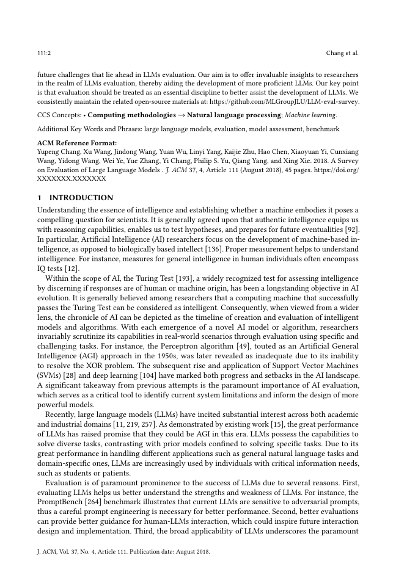
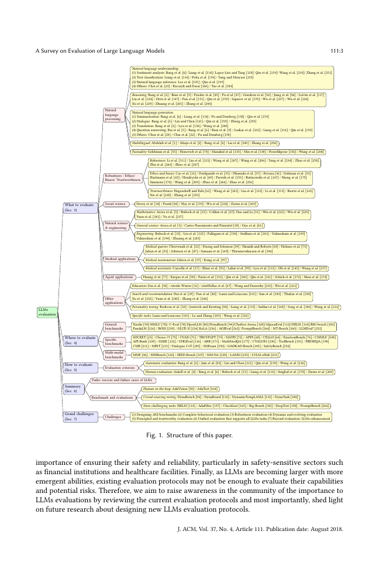
2 背景
2.1 大型语言模型
语言模型是能够理解和生成自然语言的计算模型。它们可以预测词语序列出现的概率，也可以根据给定输入生成新文本。最常见的语言模型之一是 n 元语法模型，它根据前文估计词语概率。不过，语言模型也面临稀有词或未见词、过拟合，以及难以捕捉复杂语言现象等问题。研究者持续改进模型结构和训练方法，以解决这些挑战。
大型语言模型是具有海量参数和卓越学习能力的高级语言模型。GPT-3、InstructGPT 和 GPT-4 等模型的核心模块，是 Transformer 中的自注意力模块，它构成语言建模任务的基本积木。Transformer 能够高效处理序列数据，实现并行计算并捕捉文本中的长距离依赖，从而改变了自然语言处理领域。
大型语言模型的一个关键特征是上下文学习：模型根据给定上下文或提示生成文本。这使模型能够给出更连贯、更符合上下文的回答，适合交互式和对话式应用。另一个关键技术是基于人类反馈的强化学习。该技术使用人类生成的回答作为奖励来微调模型，使模型能够从错误中学习并逐步提升表现。
在 GPT-3、PaLM 等自回归语言模型中，给定上下文序列 $X$，模型任务是预测下一个词元 $y$。模型通过最大化给定词元序列在上下文条件下的概率进行训练：
其中，$x_1,x_2,\ldots,x_{t-1}$ 是上下文序列中的词元，$t$ 是当前位置。利用链式法则，条件概率可以分解为各位置概率的乘积：
其中 $T$ 是序列长度。这样，模型就能以自回归方式逐个预测词元，生成完整文本序列。
与大型语言模型交互的一种常见方式是提示工程：用户设计并提供具体提示文本，引导模型生成期望回答或完成特定任务。这种方式被广泛用于现有评估。用户也可以通过问答交互向模型提问并接收回答，或通过对话交互与模型进行自然语言交流。总的来说，Transformer 架构、上下文学习和基于人类反馈的强化学习，使大型语言模型改变了自然语言处理，并展现出多种应用前景。
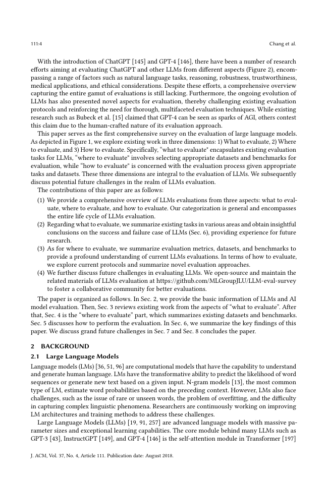
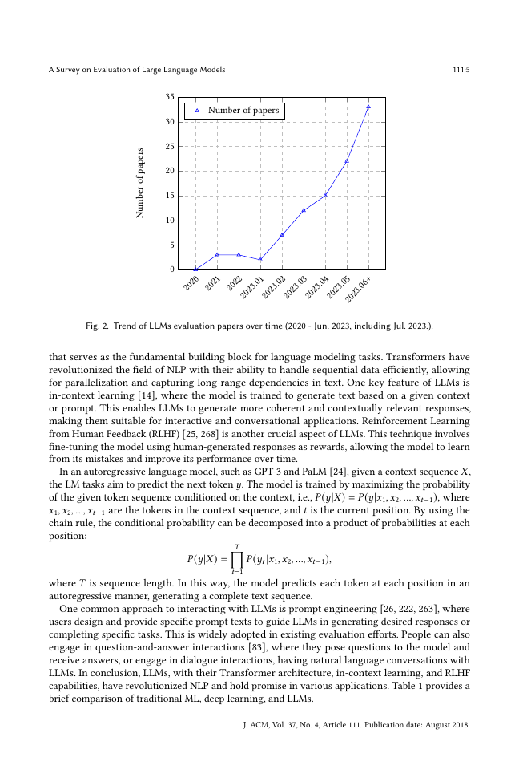
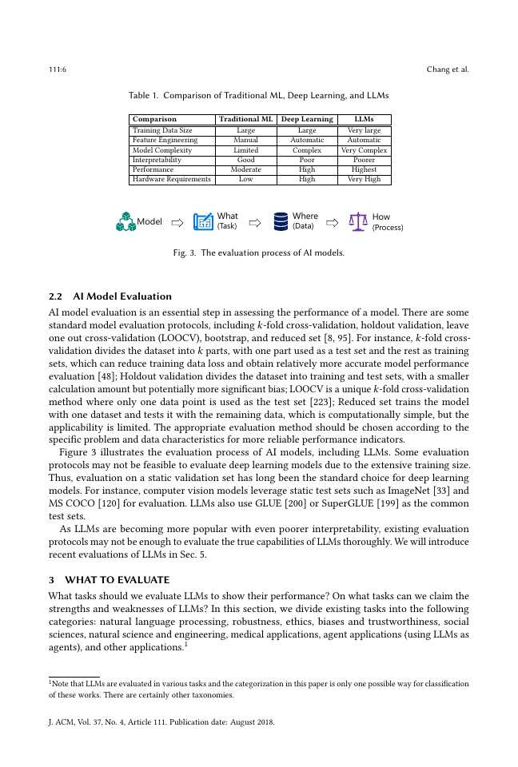
2.2 人工智能模型评估
人工智能模型评估是判断模型性能的必要步骤。常见的标准评估协议包括 $k$ 折交叉验证、留出验证、留一法交叉验证、自助法和缩减集方法。$k$ 折交叉验证把数据集分成 $k$ 份，使用其中一份作为测试集，其余部分作为训练集；这种方法能够减少训练数据损失，并获得相对准确的性能估计。留出验证把数据划分为训练集和测试集，计算量较小，但可能带来更大的偏差。留一法是特殊的 $k$ 折交叉验证，每次只使用一个数据点作为测试集。缩减集方法使用一个数据集训练模型，再用剩余数据测试，计算简单，但适用范围有限。为了得到可靠的性能指标，应根据具体问题和数据特征选择合适的评估方法。
图 3 展示了包括大型语言模型在内的人工智能模型评估流程。由于深度学习模型的训练规模很大，一些传统评估协议并不适用，因此静态验证集长期以来一直是深度学习模型的标准选择。例如，计算机视觉模型使用 ImageNet 和 MS COCO 等静态测试集；语言模型则常使用 GLUE 或 SuperGLUE 作为测试集。
随着大型语言模型越来越普及，而且可解释性更差，现有评估协议可能不足以全面衡量它们的真实能力。第 5 节将介绍近期的大型语言模型评估方法。
3 评估什么
应该评估哪些任务，才能体现大型语言模型的性能？在哪些任务上可以判断模型的优势和弱点？本文把已有任务划分为以下类别：自然语言处理；鲁棒性、伦理、偏见与可信度；社会科学；自然科学与工程；医疗应用；智能体应用；以及其他应用。大型语言模型可以在许多任务上被评估，这里的分类只是对已有工作的一个组织方式，并非唯一分类体系。
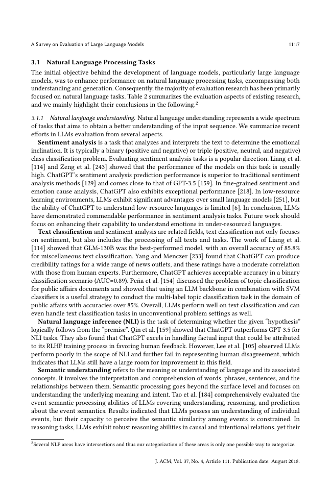
3.1 自然语言处理任务
语言模型特别是大型语言模型最初的目标，就是提升自然语言处理任务上的表现，包括语言理解和语言生成。因此，大多数评估研究都集中在自然语言任务。表 2 汇总了相关研究的评估方向，下面重点说明这些研究得出的结论。
3.1.1 自然语言理解
自然语言理解包含一系列旨在更好理解输入序列的任务。
情感分析。 情感分析通过分析和解释文本，判断其中的情感倾向，通常是二分类（正面、负面）或三分类（正面、中性、负面）问题。情感分析是热门评估方向。已有研究显示，大型语言模型在该任务上的性能通常较高。ChatGPT 的情感预测优于传统情感分析方法，接近 GPT-3.5；在细粒度情感和情绪原因分析中，ChatGPT 也表现出较强能力。在低资源学习环境中，大型语言模型明显优于小型语言模型，但 ChatGPT 理解低资源语言的能力仍然有限。总体而言，大型语言模型已经能够较好完成情感分析，后续工作应重点增强它们理解低资源语言情绪的能力。
文本分类。 文本分类与情感分析相关，但不只关注情绪，还涵盖所有文本处理任务。GLM-130B 在多种文本分类任务中取得最佳表现，总体准确率达到 85.8%。ChatGPT 可以为广泛的新闻媒体生成可信度评分，且与人类专家评分存在中等程度相关性；在二分类场景中，其准确率也达到可接受水平。将大型语言模型作为骨干并结合支持向量机分类器，可以在公共事务文档的多标签主题分类中取得超过 85% 的准确率。总体来说，大型语言模型在文本分类上表现良好，甚至能够处理一些非典型分类设定。
自然语言推理。 自然语言推理的任务是判断给定“假设”是否能够从“前提”中逻辑推出。ChatGPT 在自然语言推理上优于 GPT-3.5，并且在处理事实性输入时表现突出，这可能与其偏好人类反馈的强化学习训练过程有关。然而，另有研究观察到，大型语言模型在自然语言推理范围内表现较差，也难以表达真实的人类分歧，说明该方向仍有很大改进空间。
语义理解与社会知识。 语义理解关注语言及其概念的意义，包括对词语、短语、句子及其关系的解释和理解。语义处理不止停留在表层形式，还要理解潜在含义和意图。对事件语义的综合评估表明，大型语言模型能够理解单个事件，但识别事件之间语义相似性的能力受限。在推理任务中，模型对因果关系和意图关系有较强推理能力，但在其他关系类型上明显较弱；当上下文信息增加时，模型对未来事件的预测能力会提升。
在基础短语评估中，模型表现较差。GPT-3.5 和 Bard 不能稳定区分有意义短语和无意义短语，经常把高度无意义的短语判断为有意义；GPT-4 有明显改善，但仍显著低于人类水平。因此，大型语言模型的语义理解总体仍不理想，未来应针对这一能力进行改进。社会知识理解的研究还发现，参数量小得多、经过监督微调的 BERT，在社会知识学习和概念识别上明显优于 GPT、GPT-J-6B 等先进大型语言模型的零样本结果。这说明，参数规模增加并不必然带来更高水平的社会知识。
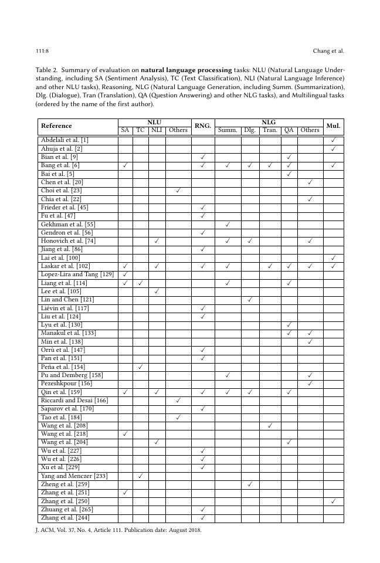
3.1.2 推理
推理对智能模型提出了重要挑战。模型不仅要理解给定信息，还必须利用推断，在没有直接答案时推导出结论。现有研究越来越关注大型语言模型的推理能力，主要包括数学推理、常识推理、逻辑推理和领域特定推理。
ChatGPT 在算术推理上很强，在多数任务中超过 GPT-3.5，但数学推理整体仍需改进。在符号推理任务上，ChatGPT 多数时候反而弱于 GPT-3.5，可能是因为它更容易给出不确定回答。反事实任务变体上的较差表现，说明当前模型的抽象推理能力存在局限；其他研究也发现现有大型语言模型的抽象推理能力非常有限。
在逻辑推理方面，ChatGPT 和 GPT-4 在多数基准上超过传统微调方法，显示出优势，但处理新数据和分布外数据时仍有困难。ChatGPT 在部分逻辑任务上不如 GPT-3.5 和 Bard，这可能是因为它被专门设计为聊天模型，更擅长维持对话合理性。FLAN-T5、LLaMA、GPT-3.5 和 PaLM 在一般演绎推理任务上表现良好；GPT-3.5 在归纳推理中不容易保持正确方向。
在多步推理方面，PaLM 和 Claude 2 是仅有的、能够取得相近表现的两个模型家族，但仍弱于 GPT 家族。LLaMA-65B 是当时最稳健的开源大型语言模型之一，性能接近 code-davinci-002。ChatGPT 通常不擅长常识推理，但在非文本语义推理上相对更好；它缺乏空间推理能力，却有较好的时间推理能力。ChatGPT 在因果和类比推理上表现尚可，但多跳推理较差，这与其他大型语言模型在复杂推理上的弱点相似。零样本 InstructGPT 和 Codex 可以完成复杂医学推理，但仍需改进；在语言洞察问题上，ChatGPT 的表现接近人类参与者。
需要注意，上述结论大多来自特定数据集。如今，更复杂的数学推理和结构化数据推理任务已经成为评估大型语言模型能力的主流基准。总体而言，大型语言模型在推理方面潜力很大，并且性能持续提升，但仍面临许多挑战和限制，需要更深入的研究与优化。
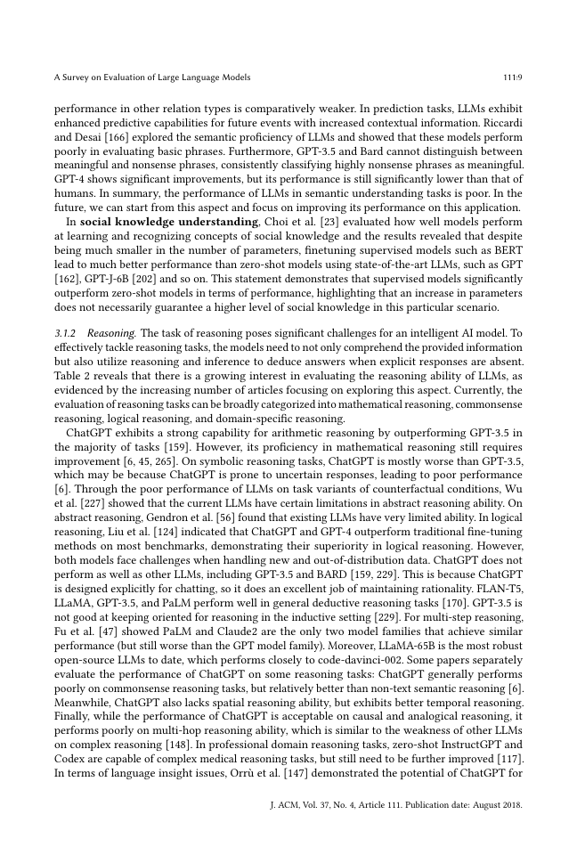
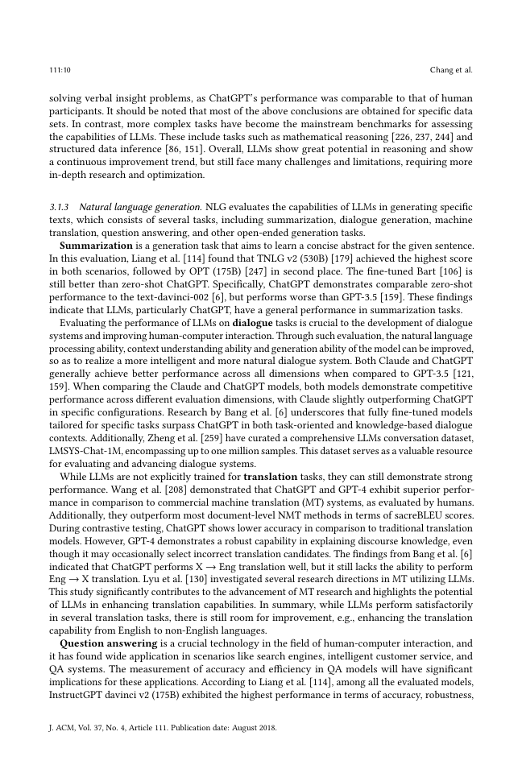
3.1.3 自然语言生成
自然语言生成评估模型生成特定文本的能力，包括摘要、对话生成、机器翻译、问答以及其他开放式生成任务。
摘要。 摘要任务旨在为给定句子或文档生成简洁概括。评估显示，TNLG v2（5300 亿参数）在两种场景中得分最高，OPT（1750 亿参数）排名第二。经过微调的 BART 仍优于零样本 ChatGPT。ChatGPT 的零样本表现接近 text-davinci-002，但弱于 GPT-3.5。这说明大型语言模型，尤其是 ChatGPT，已经具备一般性的摘要能力。
对话。 评估对话任务对于发展对话系统、改善人机交互十分重要，因为它能够同时检验模型的自然语言处理、上下文理解和生成能力。Claude 和 ChatGPT 在各个维度总体优于 GPT-3.5；二者表现接近，部分配置下 Claude 略胜。针对特定任务完全微调的模型，在任务型和知识型对话中都能超过 ChatGPT。研究者还整理了包含约一百万条样本的 LMSYS-Chat-1M 对话数据集，为对话系统评估和发展提供了重要资源。
机器翻译。 虽然大型语言模型并非专门为翻译训练，它们仍能表现出较强能力。人工评估显示，ChatGPT 和 GPT-4 优于商业机器翻译系统；在文档级神经机器翻译的句级评价中，它们也超过大多数方法。对比测试中，ChatGPT 的准确率低于传统翻译模型；GPT-4 虽然能够很好解释篇章知识，却偶尔选择错误的翻译候选。ChatGPT 擅长从其他语言翻译到英语，但从英语翻译到其他语言的能力仍不足。总体来说，大型语言模型在多种翻译任务上表现令人满意，但英语到非英语语言的翻译仍有改进空间。
问答。 问答是人机交互中的关键技术，广泛应用于搜索引擎、智能客服和问答系统。准确率和效率的衡量会直接影响这些应用。对九种问答场景的研究显示，InstructGPT 的达芬奇第二版在准确性、鲁棒性和公平性方面表现最佳。GPT-3.5 和 ChatGPT 在回答通识问题方面比 GPT-3 有明显提升，ChatGPT 在多数领域比 GPT-3.5 高出两个百分点以上，但在 CommonsenseQA 和 Social IQA 上略弱。这可能与 ChatGPT 更谨慎有关：信息不足时它倾向于拒答。经过监督微调的 Vicuna 和 ChatGPT 得分接近满分，明显超过没有监督微调的模型。总体而言，大型语言模型在问答任务上表现优秀，未来仍应增强社会常识、事件常识和时间常识。
其他生成任务。 在句子风格迁移中，ChatGPT 通过少样本学习超过此前的监督式最佳模型，但在控制正式程度方面仍与人类行为存在明显差异。写作评估显示，大型语言模型在信息性、专业性、论证性和创造性写作等类别中表现相对稳定，说明它具有一般性写作能力。即使没有参考文本，ChatGPT 也能从多个角度评价文本质量，超过多数已有自动指标；让 ChatGPT 为文本质量生成数值评分，是被研究的多种方法中最可靠、最有效的方式。
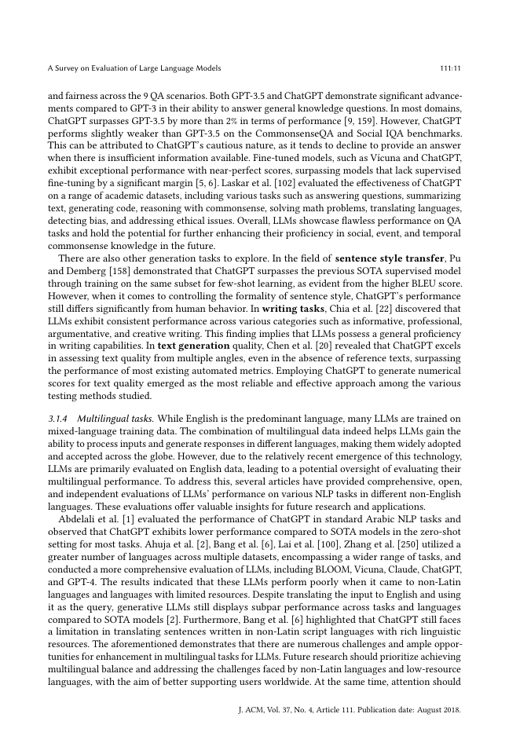
3.1.4 多语言任务
英语是大型语言模型评估中占主导地位的语言，但许多模型实际上使用混合语言数据训练。多语言数据使模型能够处理不同语言的输入并生成相应回答，因此更容易在全球范围采用。然而，由于这项技术出现较晚，模型主要在英语数据上评估，可能忽略了多语言能力。已有研究针对多种非英语语言和自然语言处理任务，开展了开放、独立、全面的评估。
在标准阿拉伯语自然语言处理任务中，ChatGPT 零样本表现多数低于先进模型。覆盖更多语言、数据集和任务的研究对 BLOOM、Vicuna、Claude、ChatGPT 和 GPT-4 进行了比较，发现这些模型在非拉丁文字和低资源语言上表现较差。即使先把输入翻译成英语再作为查询，生成式大型语言模型在多种任务和语言上仍低于先进模型。ChatGPT 对使用非拉丁文字、但资源丰富的语言进行句子翻译时也存在局限。
这些结果说明，大型语言模型的多语言任务仍面临许多挑战和改进机会。未来研究需要关注多语言能力平衡，解决非拉丁语言和低资源语言的问题，从而更好地支持全球用户；同时还应关注语言使用的公平性和中立性，减少英语偏见及其他可能影响多语言应用的偏见。
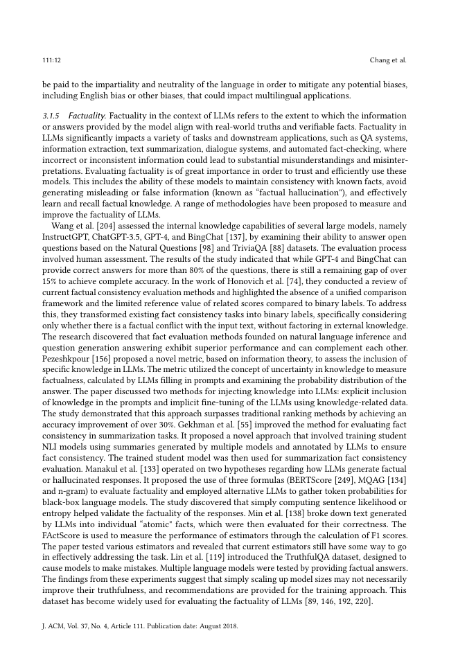
3.1.5 事实性
事实性指模型提供的信息或答案与现实真相和可验证事实的一致程度。它会影响问答、信息抽取、文本摘要、对话和自动事实核查等下游任务；错误或不一致的信息可能造成严重误解。评估事实性对于信任和高效使用模型非常重要，既要考察模型是否保持已知事实的一致性、是否避免生成误导性或虚假信息，也要考察模型学习和回忆事实知识的能力。
研究者使用 Natural Questions 和 TriviaQA 等数据集，以人工评估方式考察 InstructGPT、ChatGPT-3.5、GPT-4 和 BingChat 的内部知识能力。GPT-4 和 BingChat 能正确回答超过 80% 的问题，但距离完全准确仍有 15% 以上差距。对事实一致性评估方法的综述指出，当前缺少统一比较框架，相关连续分数相比二元标签的参考价值有限。将事实一致性任务转换为二元标签，只判断回答是否与输入文本发生事实冲突，不额外引入外部知识后，基于自然语言推理的方法与基于问题生成和回答的方法表现较好，二者可以互相补充。
有研究提出基于信息论的指标，利用知识不确定性评估模型是否包含特定知识：让模型补全提示，并检查答案的概率分布。知识可以显式写入提示，也可以通过与知识相关的数据隐式微调模型；该方法比传统排序方法准确率提高三十多个百分点。另一些工作训练学生自然语言推理模型，利用多个模型生成的摘要和大型语言模型的标注来评估摘要事实一致性。还有研究使用 BERTScore、MQAG 和 n 元语法等公式，并让其他大型语言模型提供黑盒模型的词元概率；结果发现，仅计算句子似然或熵就有助于验证回答的事实性。
FActScore 把大型语言模型生成的文本拆分成单独的“原子事实”，逐条评估其正确性，并通过 F1 分数衡量估计器表现。TruthfulQA 数据集则专门设计容易诱发模型错误的问题，用于测试模型能否给出真实答案。实验说明，单纯扩大模型规模不一定能提高真实性，因此还需要改进训练方法。TruthfulQA 已成为评估大型语言模型事实性的常用数据集。
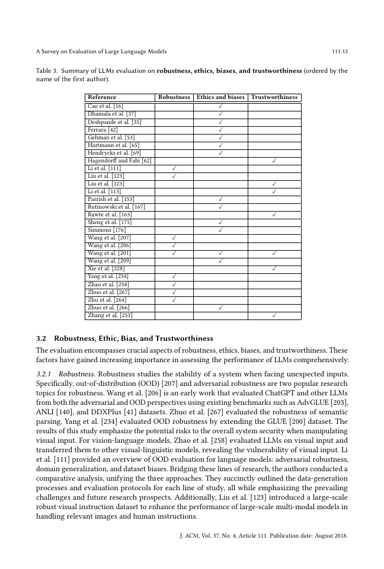
3.2 鲁棒性、伦理、偏见与可信度
大型语言模型评估必须覆盖鲁棒性、伦理、偏见和可信度。这些因素对于全面判断模型性能越来越重要。
3.2.1 鲁棒性
鲁棒性研究系统面对意外输入时的稳定性，其中分布外鲁棒性和对抗鲁棒性是两个热门方向。已有工作从对抗和分布外两个角度评估 ChatGPT 及其他大型语言模型，使用 AdvGLUE、ANLI 和 DDXPlus 等数据集；也有研究考察语义解析鲁棒性，或扩展 GLUE 来评估分布外鲁棒性。相关结果强调，篡改视觉输入可能危及整个系统的安全。对视觉语言模型的研究显示，视觉输入具有明显脆弱性。
有关语言模型分布外评估的综述把对抗鲁棒性、领域泛化和数据集偏见统一起来，比较各条研究路线的数据生成过程与评估协议，并总结挑战和未来方向。另有研究构建大规模鲁棒视觉指令数据集，以增强多模态模型处理相关图像和人类指令的能力。
PromptBench 是评估大型语言模型提示鲁棒性的统一基准，覆盖字符、词语、句子和语义多个层级的对抗文本攻击。结果表明，当代大型语言模型容易受到对抗性提示影响，说明模型必须提高面对恶意输入时的鲁棒性。AdvGLUE++ 则提供新的对抗数据和评估协议，并通过越狱式系统提示考察机器伦理。
3.2.2 伦理与偏见
大型语言模型可能内化、传播甚至放大网络训练语料中的有害信息，包括冒犯、仇恨言论和侮辱，也包括针对特定人口身份的社会刻板印象，例如性别、种族、宗教、职业和意识形态偏见。系统评估发现，ChatGPT 仍会产生一定程度的有害内容；引入角色扮演后，生成的毒性最高可增加六倍，而且可能对特定实体产生有偏的毒性。
与只测量社会偏见不同，有研究进一步调查 ChatGPT 偏见的来源、机制及伦理后果。政治倾向和人格特征测试显示，部分大型语言模型偏向进步主义观点，并呈现类似 ENFJ 的人格类型。GPT-3 在道德基础理论相关任务中也表现出道德偏见。已有研究指出，语言模型具备一定伦理判断潜力，但仍需改进；中文对话偏见数据集 CHBias 揭示了预训练模型中的偏见风险并探索去偏方法。对 GPT-4 对齐能力的评估发现了系统性偏差，ChatGPT 在文化价值观上也存在一定偏差。所有这些伦理问题都可能带来严重风险，阻碍模型部署并对社会产生深远影响。
3.2.3 可信度
除鲁棒性和伦理之外，可信度研究还关注隐私、公平、判断一致性和幻觉等问题。DecodingTrust 从八个方面考察 GPT 模型，尤其是 GPT-3.5 和 GPT-4：毒性、刻板印象偏见、对抗与分布外鲁棒性、对抗性示范鲁棒性、隐私、机器伦理和公平性。GPT-4 在标准评估中的可信度通常优于 GPT-3.5，但同时更容易受到攻击。
对具备较强认知能力的语言模型进行认知反思测试和语义错觉实验后，研究者发现它们可以避开常见的人类直觉和认知错误，表现出“超理性”。这种方法为发现模型此前未被识别的偏见和伦理问题提供了新视角。另有研究指出，即使大型语言模型第一次判断正确，在受到追问、否定或误导线索干扰时，判断一致性也会显著下降；不同提示方法可以在一定程度上缓解该问题。
大型语言模型能够生成连贯、看似符合事实的文本，但也可能产生事实错误或缺乏现实依据的陈述，这种现象称为幻觉。评估幻觉有助于改进训练方法。LRV-Instruction 是用于大规模视觉模型幻觉评估的鲁棒视觉指令数据集，配合 GAVIE 方法微调后，可以有效缓解幻觉。另有研究发现，视觉指令中对象分布会显著影响视觉语言模型的对象幻觉，并提出基于投票的查询方法 POPE 来改进对象幻觉评估。
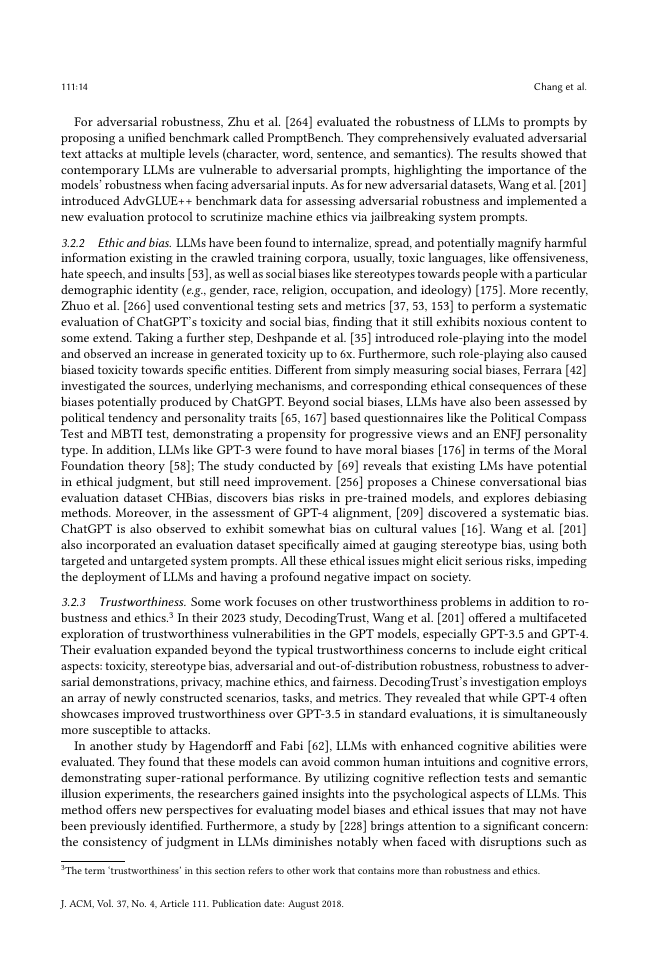
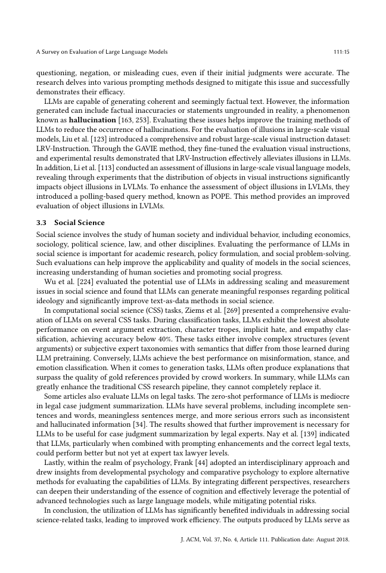
3.3 社会科学
社会科学研究人类社会和个体行为，包括经济学、社会学、政治学、法学等学科。评估大型语言模型在社会科学中的表现，对于学术研究、政策制定和社会问题解决都很重要，有助于提升模型在社会科学中的适用性和质量，增进对人类社会的理解。
大型语言模型可以生成关于政治意识形态的有意义回答，并显著改善社会科学中的文本数据化方法。在计算社会科学任务中，模型在事件论元抽取、人物套路、隐性仇恨和同理心分类上的绝对性能最低，准确率低于 40%；这些任务要么包含复杂结构，要么使用与预训练语义不同的主观专家分类体系。相反，模型在错误信息、立场和情绪分类上表现最好。对于生成任务，大型语言模型经常能产生质量超过众包标注参考答案的解释。总体而言，模型可以显著增强传统计算社会科学流程，但不能完全替代该流程。
法律任务的零样本表现通常一般。法律判决摘要存在句子和词语不完整、无意义句子合并，以及信息不一致和幻觉等更严重错误，因此仍需进一步改进，才能服务于法律专家。结合更好的提示和正确法律文本后，模型性能可以提高，但还没有达到专业税务律师水平。心理学研究则从发展心理学和比较心理学中借鉴方法，探索评估大型语言模型能力的替代路径。跨学科视角有助于理解认知本质、发挥先进技术潜力并降低风险。
总之，大型语言模型已经提高了人们处理社会科学任务的效率，其输出可作为提升生产力的重要资源，但现有模型不能完全替代该领域的人类专业人员。
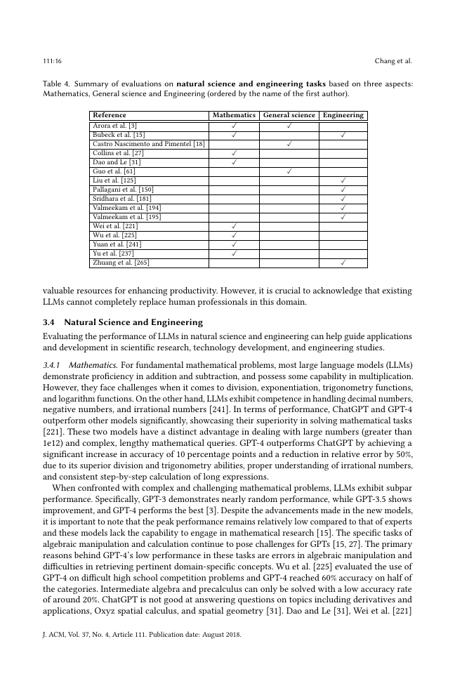
3.4 自然科学与工程
评估大型语言模型在自然科学和工程领域的表现，可以指导科学研究、技术开发和工程应用。
3.4.1 数学
在基础数学问题上，大多数大型语言模型擅长加减法，也具备一定乘法能力，但在除法、乘方、三角函数和对数函数上存在困难。模型能够处理小数、负数和无理数。ChatGPT 和 GPT-4 明显优于其他模型，在大于 $10^{12}$ 的大数和复杂、冗长的数学问题上优势尤其明显。GPT-4 的准确率提高约 10 个百分点，相对误差降低约 50%，原因包括更好的除法和三角函数能力、对无理数的正确理解，以及长表达式中更稳定的逐步计算。
面对复杂数学问题，模型整体表现较差：GPT-3 接近随机水平，GPT-3.5 有所改善，GPT-4 最好，但峰值性能仍远低于专家，也没有进行数学研究的能力。代数变形和计算依然是 GPT 系列的难点，主要原因是代数操作错误和难以提取相关领域概念。GPT-4 在高难度高中竞赛题的若干类别中达到约 60% 准确率，但中级代数和微积分前置内容的准确率约为 20%。ChatGPT 在导数及其应用、空间解析几何和立体几何方面也不擅长。
任务难度增加时，ChatGPT 的表现会下降：识记层级正确率约 83%，理解层级约 62%，应用层级约 27%，最高认知复杂度层级只有约 10%。这些结果说明，大型语言模型的有效性高度受问题复杂度影响，设计能够处理高难度任务的人工智能系统时必须考虑这一点。
3.4.2 一般科学
大型语言模型在化学领域仍需明显改进。针对不同化学子领域设计的五个基础任务中，ChatGPT 的准确率从 25% 到 100% 不等。综合化学基准包含八项实践任务，用于比较 GPT-4、GPT-3.5 和 Davinci-003，实验表明 GPT-4 优于另外两个模型。模型在物理问题上的表现低于化学问题，可能是因为该设定下化学问题的推理复杂度较低。一般科学领域的评估研究仍然有限，现有结果表明这里还有较大提升空间。
3.4.3 工程
工程任务可以按难度递增排列为代码生成、软件工程和常识规划。在代码生成中，专门训练的小型模型具有竞争力，CodeGen-16B 的表现接近参数更大的 ChatGPT，匹配率约为 78%。ChatGPT 在动态规划、贪心算法和搜索方面超过能力很强的大学生，但在数据结构、树和图论方面较弱。GPT-4 能根据指令生成代码、理解已有代码、推理代码执行、模拟指令影响、用自然语言说明结果，并有效执行伪代码。
ChatGPT 在软件工程任务中通常表现良好，回答详细，常常超过人类专家和先进方法；但在代码漏洞检测、基于信息检索的测试优先级等任务上仍不能给出准确答案。常识规划方面，即使是人类擅长的简单规划任务，模型也可能表现不佳。微调 CodeT5 在多个领域取得最佳表现且推理时间最短，但模型的规划泛化能力有限。总体来看，大型语言模型能够处理简单工程任务，却不擅长复杂工程任务。
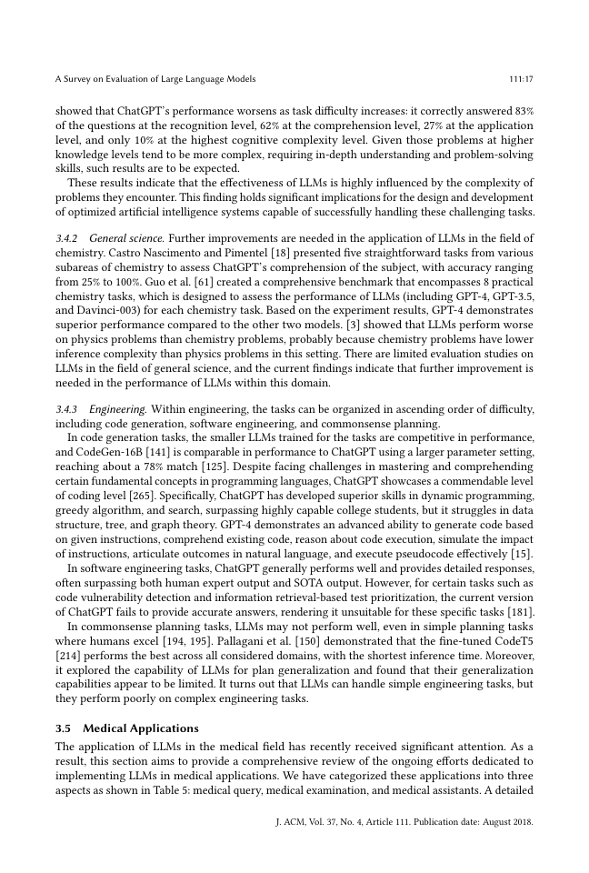
3.5 医疗应用
大型语言模型在医疗领域的应用近年受到广泛关注。本文把医疗应用分为医疗问答、医学考试和医疗助手三个方面。
3.5.1 医疗问答
在医疗问答上评估大型语言模型，是为了向医务人员和患者提供准确、可靠的医疗信息。ChatGPT 能够针对遗传学、放射肿瘤物理、生物医学等多种医疗问题生成相对准确的信息，体现出一定实用性。但在基层医疗综合评估中，ChatGPT 的平均得分低于及格线，仍有改进空间。针对生育相关临床提示，ChatGPT 能生成与现有资料相似的回答，却不能可靠引用来源，并存在编造信息的风险，这限制了它在临床中的实用性。
3.5.2 医学考试
研究者使用美国医师执照考试评估大型语言模型。ChatGPT 在第一阶段和第二阶段考试题上的准确率因数据集而异；在部分题库中，脱离上下文的信息少于正确答案。另有研究发现，未经专门训练的 ChatGPT 已达到或接近考试及格线，并表现出较高一致性和洞察力，显示其辅助医学教育和临床决策的潜力。ChatGPT 可以回答医学问题、提供解释并支持决策，为医学生和临床医生提供额外资源。与搜索引擎结果相比，ChatGPT 的回答更理解上下文，也有更好的演绎推理能力。
3.5.3 医疗助手
大型语言模型在识别胃肠疾病、痴呆诊断、加速新冠文献评估以及医疗综合辅助方面展现潜力，但也存在缺乏原创性、输入要求高、资源限制、回答不确定、误诊和患者隐私等风险。
在医疗教育中，GPT-3.5 和 GPT-4 对外科临床信息的理解能力也被评估，整体准确率分别约为 46.8% 和 76.4%，差异明显。GPT-4 在不同专科中表现稳定，说明它可能理解复杂临床信息并提升外科教育。ChatGPT 还可以把放射学报告翻译为更容易理解的语言，并给出一般性建议。结果表明，大型语言模型用于临床教育是可行的，但仍需解决局限，才能释放其潜力。
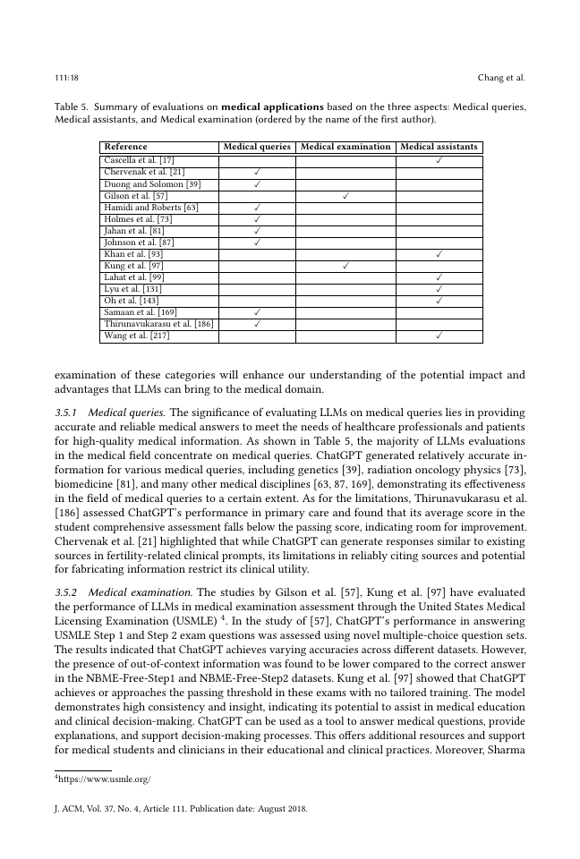
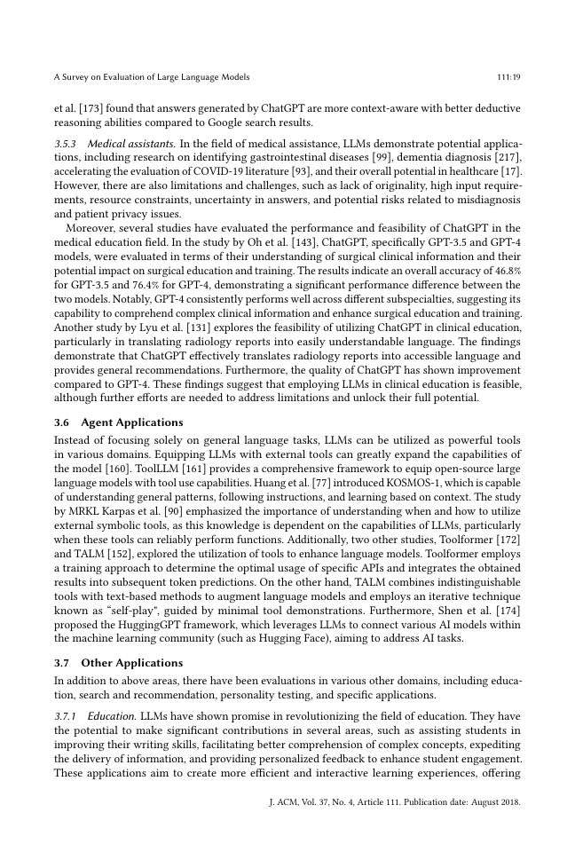
3.6 智能体应用
大型语言模型不应只被视为通用语言任务模型，也可以在不同领域作为强大工具。为模型接入外部工具能够显著扩展能力。ToolLLM 提供了让开源大型语言模型具备工具使用能力的完整框架。KOSMOS-1 能够理解一般模式、遵循指令并基于上下文学习。MRKL 研究强调，模型必须理解何时以及如何使用外部符号工具，尤其是在工具可以可靠执行函数时。
Toolformer 和 TALM 也探索了利用工具增强语言模型。Toolformer 通过训练决定何时使用特定应用程序接口，并把得到的结果纳入后续词元预测；TALM 把工具与文本方法结合，并在少量工具示例指导下使用称为“自博弈”的迭代方法。HuggingGPT 框架则利用大型语言模型连接机器学习社区中的各种人工智能模型，以完成更广泛的人工智能任务。
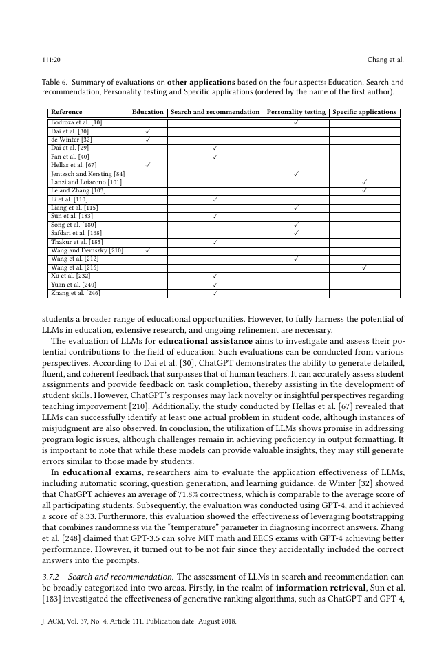
3.7 其他应用
除上述领域外，研究者还在教育、搜索与推荐、人格测试和具体应用中评估大型语言模型。
3.7.1 教育
大型语言模型有望改变教育：帮助学生改进写作、理解复杂概念、加快信息传递，并提供个性化反馈以提升参与度。这些应用旨在创造更高效、更具互动性的学习体验，但要充分发挥潜力，仍需要大量研究和持续改进。
在教育辅助方面，ChatGPT 能生成详细、流畅、连贯的反馈，质量甚至超过人类教师；它可以准确评估学生作业并反馈任务完成情况，帮助培养学生能力。但 ChatGPT 的回答可能缺少新颖性，也未必能对教学改进提供深刻观点。对学生代码的研究表明，大型语言模型通常能识别至少一个真实问题，但也会误判。它们在处理程序逻辑方面有潜力，输出格式仍是难点，而且可能产生与学生相似的错误。
教育考试评估关注自动评分、试题生成和学习指导。ChatGPT 的平均正确率约为 71.8%，接近参与学生的平均分；GPT-4 的成绩更高。结合温度参数引入随机性的自助方法，有助于诊断错误答案。GPT-3.5 可以完成麻省理工学院数学和电子工程与计算机科学考试，GPT-4 更强，但后续分析发现，某项评估把正确答案意外放入提示，因而并不公平。
3.7.2 搜索与推荐
搜索与推荐评估大致分为信息检索和推荐系统两类。在信息检索中，有研究考察 ChatGPT 和 GPT-4 的生成式排序算法，结果显示经过引导的模型在主流基准上具有竞争力，甚至超过监督方法。把 ChatGPT 的排序能力提取为专门模型后，用一万条 ChatGPT 生成数据训练的模型，在 BEIR 数据集上的表现超过使用四十万条 MS MARCO 标注数据训练的模型。在线随机实验比较了搜索引擎和聊天工具，结果显示使用 ChatGPT 类工具的参与者在所有任务上耗时更少，但差异并不显著。
在推荐系统中，大型语言模型利用自然语言处理能力理解用户偏好、项目描述和上下文信息，从而提供更准确、更个性化的推荐。但 ChatGPT 可能产生不公平推荐，因此必须评估公平性。研究表明，ChatGPT 在推荐系统中表现较强，列表式排序能够在成本和效果之间取得最佳平衡，并有望缓解冷启动、提供可解释推荐。基于模态的推荐模型和基于文本的协同过滤也显示出潜力。
3.7.3 人格测试
人格测试用于测量个体的人格特征和行为倾向，大型语言模型已被广泛用于相关任务。对 Davinci-003 聊天机器人的研究发现，其回答一致性存在变化，但同时表现出亲社会特征；目前还无法确定这些回答来自有意识的自我反思，还是算法过程。许多模型在自我评估中不可靠，并表现出固有偏见，因此需要专门的机器人格测量工具。
研究者提出针对模型生成文本人格特征的心理测量方法，并以五百多名成年人构建的框架评估主流模型的情绪智力。多数大型语言模型的情商得分高于平均值，GPT-4 得分 117，超过 89% 的人类参与者；但多变量模式分析显示，模型达到人类水平时，并不一定依赖与人类相似的机制。词语猜测游戏可以更有趣、更互动地评估模型的语言智能和心智理论能力。幽默研究则发现，ChatGPT 虽然在自然语言任务上能力很强，却难以捕捉幽默的细微差别和依赖上下文的特性。
3.7.4 具体应用
已有研究探索大型语言模型在游戏设计、模型性能评估、日志解析等任务中的应用与评估。这些工作帮助我们理解模型在不同任务中的实际价值，揭示其潜力和局限，并为性能改进提供依据。
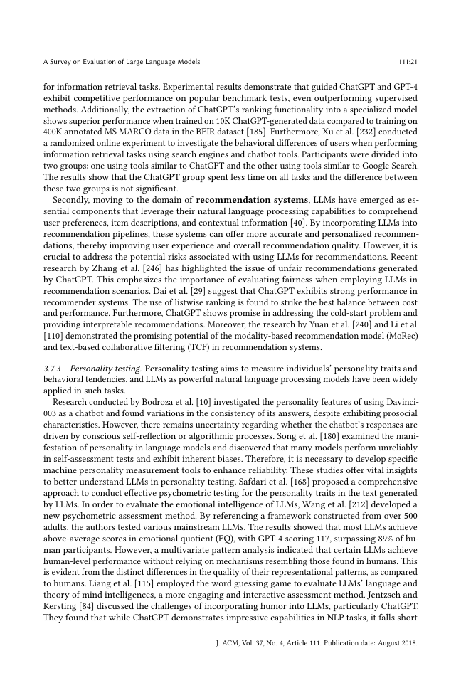
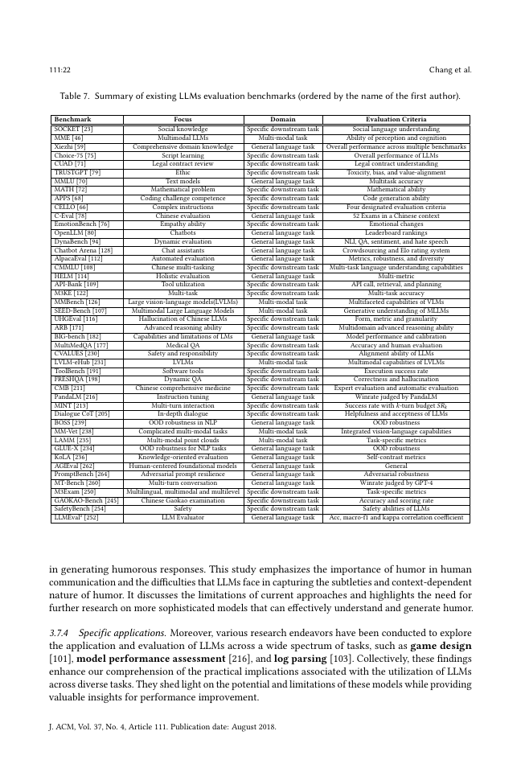
4 在哪里评估：数据集与基准
大型语言模型评估数据集用于测试和比较不同语言模型在各种任务上的表现。GLUE、SuperGLUE 等数据集模拟现实语言处理场景，覆盖文本分类、机器翻译、阅读理解和对话生成等任务。本节不逐一讨论单个语言模型数据集，而是集中讨论用于大型语言模型的评估基准。
近年来出现了大量基准。本文汇总其中 46 个具有代表性的基准，并按照用途分为三类：通用语言任务基准、特定下游任务基准和多模态任务基准。每个基准关注不同能力和评估标准，对相应领域都有贡献。由于大型语言模型评估发展非常快，本文不可能覆盖所有基准，原作者也欢迎社区补充。
4.1 通用任务基准
大型语言模型被设计为解决大量不同任务，因此通用基准通常同时评估多种能力。
Chatbot Arena 和 MT-Bench 是评估聊天模型的重要基准。Chatbot Arena 让用户与匿名模型交互并投票，利用大量真实用户偏好比较不同聊天模型，从而揭示模型在现实场景中的优势和局限。MT-Bench 使用专门设计的多轮问题评估模型的连续对话能力，能够模拟真实对话情境，弥补传统方法在复杂多轮问题上的不足。
HELM 不集中于某一个任务或指标，而是从语言理解、语言生成、连贯性、上下文敏感性、常识推理和领域知识等方面对大型语言模型进行综合评估。LLMEval2 覆盖广泛的能力评估；Xiezhi 用于测量不同学科中的知识水平；BIG-bench 则收集了来自 132 个机构、450 位作者贡献的 204 项挑战任务，涵盖数学、儿童发展、语言学、生物学、常识推理、社会偏见、物理和软件开发等领域。
KoLA 关注模型理解和使用语义知识进行推理的能力，有助于评估语言理解深度。DynaBench 支持众包式动态基准测试，研究闭环整合、分布偏移、标注效率、专家标注员作用以及交互环境中的对抗鲁棒性。M3KE 评估模型在中国教育体系中跨教育阶段学习和应用多学科知识的能力。
MMLU 为多任务文本模型提供综合测试；AlpacaEval 是自动评估基准，覆盖多种自然语言处理任务，并提供多种指标、鲁棒性测量和多样性评价；AGIEval 面向以人为中心的标准化考试评估基础模型；OpenLLM 提供公开竞赛平台，鼓励研究者提交模型并在多种任务上比较性能。
对于标准性能之外的能力，GLUE-X 评估自然语言处理模型在分布外场景中的鲁棒性，BOSS 收集分布外鲁棒性任务，PromptBench 评估不同提示工程方法及其对模型性能的影响。PandaLM 是专门训练来区分多个高水平大型语言模型的判别式模型。与只强调客观正确性的传统评估集相比，PandaLM 还考虑相对简洁性、清晰度、指令遵循、完整性和正式程度等主观因素。
4.2 特定下游任务基准
除通用基准外，研究者还为特定下游任务设计了专门基准。
问答基准是评估大型语言模型的重要组成部分。MultiMedQA 面向医学考试、医学研究和消费者健康问题，由七个医学问答数据集组成，其中六个是已有数据集，一个是新数据集，用于衡量模型的临床知识和问答能力。FRESHQA 评估模型回答当前世界知识的动态问答能力，把搜索引擎检索到的最新信息加入提示后，模型表现得到明显提升。Dialogue CoT 使用显式思维链和思维链两种策略，评估模型回答深度对话问题的能力。
ARB 探测跨多个领域的高级推理能力；TRUSTGPT 关注毒性、偏见和值对齐；EmotionBench 评估模型模拟人类情绪反应的能力。SafetyBench 使用选择题测试中英文大型语言模型的安全性，结果显示当前模型存在明显安全缺陷。Choice-75 评估日常决策，CELLO 评估复杂指令理解能力，包含八种特征、综合数据集和四类评估标准。
C-Eval 是首个大规模中文基础模型知识与推理基准；CMMLU 评估 18 个大型语言模型在多个学科中的中文能力，发现多数模型在中文环境中表现不理想。M3Exam 同时覆盖多语言、多模态和多层级；GAOKAO-Bench 使用中国高考题评估复杂、依赖上下文的能力；SOCKET 评估社会知识概念的学习和识别；MATH 评估数学推理和问题求解；APPS 评估根据自然语言规格生成 Python 代码；CUAD 是专家标注的法律合同审查数据集；CVALUES 评估模型与安全、负责任标准的对齐；CMB 是基于中文和中国文化的综合中医评估基准；UHGEval 评估中文模型生成文本时的幻觉问题。
工具使用也需要专门评估。API-Bank 是首个明确面向工具增强大型语言模型的基准，包含 53 个常用应用程序接口、264 段标注对话和 568 次调用。ToolBench 通过优化指令数据集，推动模型有效利用通用工具。MINT 则使用工具和自然语言反馈，评估模型在多轮交互中的成功率。
4.3 多模态任务基准
对于多模态大型语言模型，MME 通过精心设计的指令—答案对和简洁指令，同时评估感知与认知能力。MMBench 使用完整数据集和循环评估方法，系统测试大规模视觉语言模型。MMICL 增强视觉语言模型处理多模态上下文输入的能力，并在 MME、MMBench 等任务上表现良好。LAMM 将评估扩展到多模态点云，LVLM-eHub 通过在线竞赛平台和量化能力测试，对大型视觉语言模型进行全面比较。
SEED-Bench 用于综合评估多模态大型语言模型的生成和理解能力，包含人工标注的 19,000 道选择题，覆盖 12 个方面，包括理解图像和视频模式的能力。总体而言，近年来的基准和模型改进推动了多模态语言研究。
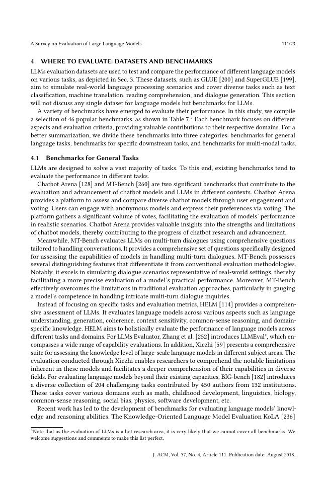
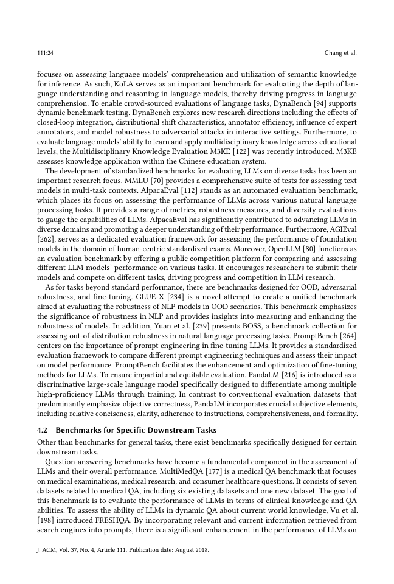
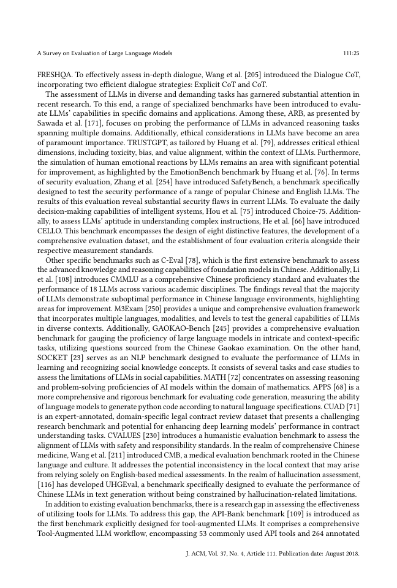
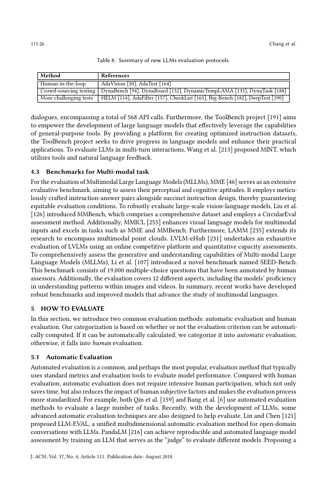
5 如何评估
本节介绍两种常见评估方法：自动评估和人工评估。分类依据是评估标准能否自动计算：能够自动计算的归入自动评估，否则归入人工评估。
5.1 自动评估
自动评估是常见、也可能是最常用的模型评估方法，通常借助标准指标和评估工具测量性能。与人工评估相比，自动评估不需要大量人工参与，既节省时间，也降低主观因素影响，使流程更标准化。许多研究使用自动方法一次评估大量任务。随着大型语言模型发展，也出现了专门帮助评估的高级自动技术：LLM-EVAL 为开放域对话提供统一的多维自动评估；PandaLM 训练一个充当“裁判”的大型语言模型，以可复现方式自动比较不同模型；自监督评估框架则不需要为新数据耗费大量标注成本。MMLU、HELM、C-Eval、AGIEval、AlpacaFarm 和 Chatbot Arena 等基准也采用自动评估。
自动评估的关键指标包括准确性、校准、公平性和鲁棒性。
5.1.1 准确性
准确性衡量模型在给定任务上的正确程度，具体定义取决于任务和问题设定。常见指标包括精确匹配、近似精确匹配、F1 分数和 ROUGE 分数。
- 精确匹配： 判断生成结果是否与参考答案完全一致。在问答任务中，完全一致记为 1，否则为 0。
- F1 分数： 综合二分类模型的精确率和召回率，公式为
- ROUGE： 主要用于摘要和机器翻译等任务，通过比较文本之间的重叠和匹配程度评估结果。
5.1.2 校准
校准描述模型输出的置信度与实际预测准确率之间的一致程度。预期校准误差是常用指标：研究者按照模型置信度分组，再计算各置信度区间内预测准确率的平均误差。选择性准确率—覆盖率曲线下面积也是常用校准指标。
5.1.3 公平性
公平性关注模型是否一致对待不同群体，也就是不同群体上的性能是否相等，群体属性可以包括性别、种族和年龄。人口统计平等差异衡量不同群体的预测是否均匀分布：
如果群体间预测差异很大，DPD 就较高，说明模型可能存在不公平偏见。均等机会差异则要求不同群体具有相等错误率，比较真实标签、群体身份和预测结果组合下的概率差异。
5.1.4 鲁棒性
鲁棒性衡量模型面对对抗攻击、数据分布变化和噪声等挑战输入时的表现。攻击成功率用于评估大型语言模型的对抗鲁棒性。设数据集 $D=\{(x_i,y_i)\}_{i=1}^{N}$ 包含 $N$ 个样本，攻击方法 $A$ 将输入 $x$ 转成对替代模型 $f$ 的对抗样本，攻击成功率可写为正确样本被攻击为错误的比例。提示性能下降率是评估大型语言模型提示鲁棒性的统一指标，用于量化提示攻击后的相对性能下降：
其中 $A$ 表示施加在提示 $P$ 上的对抗攻击，$M$ 是随任务变化的评估函数。
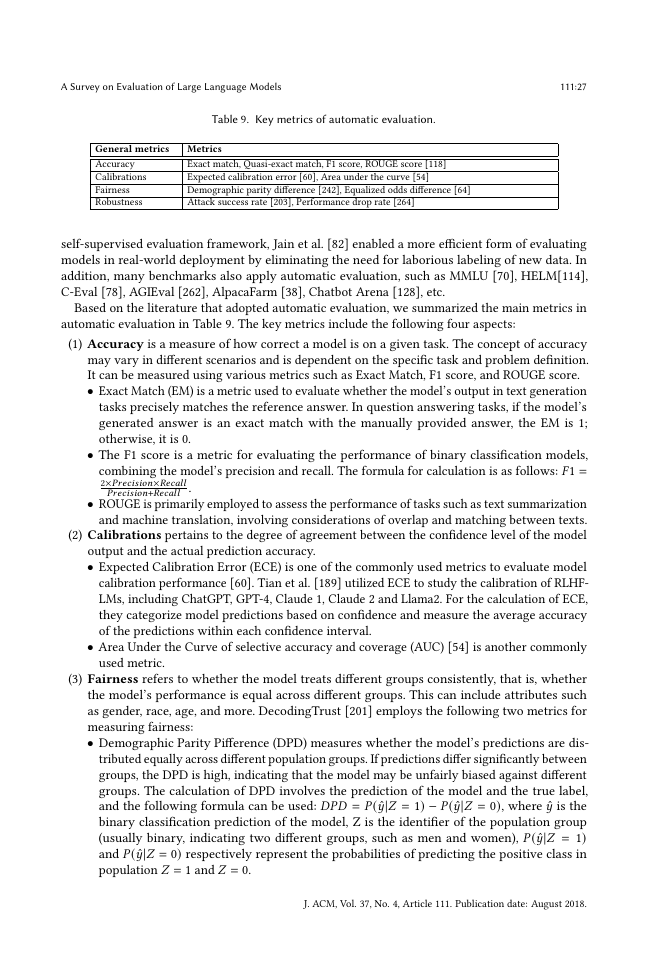
5.2 人工评估
大型语言模型的能力已经超出通用自然语言任务的标准指标，因此在自动评估不适用的非标准场景中，人工评估成为自然选择。例如，在开放式生成任务中，嵌入式相似度指标（如 BERTScore）不足以判断回答质量，人工评估更可靠。生成结果可以超越标准答案时，人工判断也更合适。
人工评估通过人类参与判断模型生成结果的质量和准确性。与自动评估相比，它更接近真实应用场景，能够提供更全面、更准确的反馈。评估者可以是专家、研究者或普通用户。已有工作让专家标注生成结果，人工评估摘要、虚假信息场景和类比推理任务；还有研究使用人工设计的测试发现，GPT-4 在多项任务上接近甚至超过人类表现。不过，人工评估也可能有很大方差和不稳定性，原因包括文化差异和个体差异。实际应用中，应根据具体情况组合使用自动评估和人工评估。
人工评估的可靠性主要取决于评估者数量、评价标准和评估者专业水平。
- 评估者数量： 数量必须具有足够代表性，并支持统计显著性分析。合理数量的评估者能够更全面地理解模型表现，并提高结果推广到更广泛场景的可靠性。
- 评价标准： 在“有帮助、诚实、无害”三条原则基础上，本文扩展出六项标准：准确性、相关性、流畅性、透明性、安全性和人类对齐。
- 专业水平： 评估者需要具备相关领域知识、任务熟悉度和方法论训练，才能准确理解并判断领域特定文本。
六项人工评估标准具体如下：
- 准确性： 判断生成文本是否精确、正确，是否符合事实知识，避免错误和不准确陈述。
- 相关性： 判断内容是否适合当前上下文或问题，信息是否真正相关、直接可用。
- 流畅性： 判断文本是否顺畅，语气和风格是否一致，语法是否正确，是否避免生硬表达和话题突变。
- 透明性： 判断模型的决策过程是否清晰、开放，用户是否能理解回答为什么这样生成。透明模型应能提供对内部工作方式的洞见。
- 安全性： 判断生成文本是否会产生伤害或意外后果，是否避免不适当、冒犯性或危险内容，以及错误信息。
- 人类对齐： 判断模型输出是否符合人类价值观、偏好和期望，是否尊重社会规范并促进积极的人机互动。
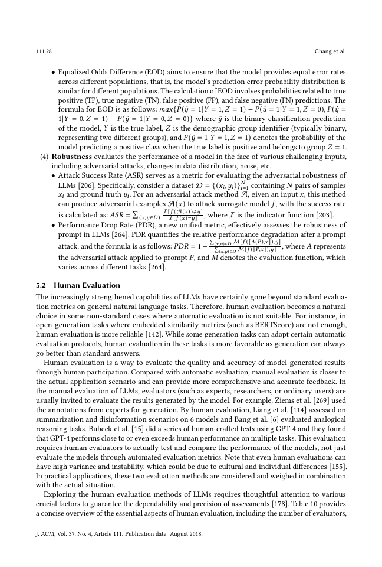
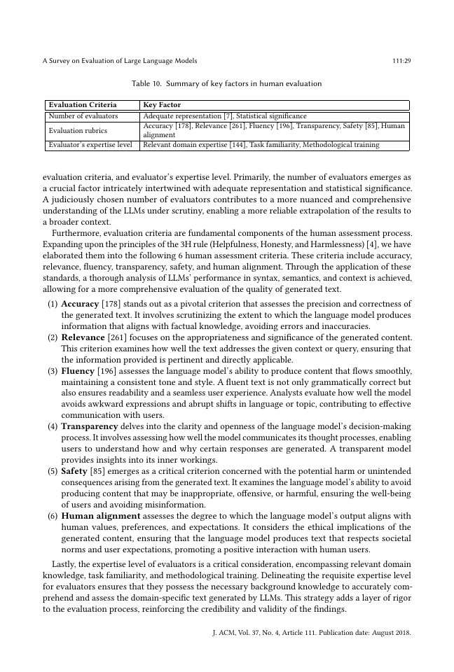
6 总结
本文回顾了第 3、4、5 节的工作。首先需要强调，现有研究没有证据表明某一个评估协议或基准一定最有用、最成功；不同协议和基准具有不同特征与关注点。这也说明，不存在在所有任务上都最好的单一模型。本文的目的不是简单决定“最佳”基准或协议，而是通过总结和分析已有评估工作，识别当前模型的成功和失败案例，推导评估协议的新趋势，并提出未来研究的挑战与机会。
6.1 任务：大型语言模型的成功与失败案例
以下结论来自已有评估，且依赖具体数据集。
6.1.1 大型语言模型擅长什么
- 能够生成流畅、准确的文本表达。
- 在情感分析、文本分类和事实性输入处理等语言理解任务上表现突出。
- 具有较强算术推理能力，逻辑推理表现优秀，时间推理也值得注意；数学推理和结构化数据推理等更复杂任务已经成为主要评估方向。
- 具有较强上下文理解能力，能够生成与输入一致的连贯回答。
- 在机器翻译、文本生成和问答等自然语言处理任务上取得令人满意的表现。
6.1.2 大型语言模型何时会失败
- 在自然语言推理中表现较差，也难以准确表达不同人类之间的分歧。
- 难以判断事件间的语义相似性，在基础短语评估中表现不佳。
- 抽象推理能力有限，在复杂上下文中容易混淆或出错。
- 面对非拉丁文字和低资源语言时性能不理想，生成式模型在不同任务和语言上的水平经常低于预期。
- 处理视觉模态信息时容易受到攻击，也可能吸收、传播并放大训练数据中的有害内容，包括冒犯、敌意和贬损性语言。
- 生成过程中可能出现社会偏见和毒性，产生有偏输出。
- 可信度不足，可能在对话中编造信息或给出错误事实。
- 难以纳入实时和动态信息，不适合要求最新知识或快速适应变化上下文的任务。
- 对提示尤其是对抗性提示敏感，这促使研究者设计新的评估和鲁棒性改进算法。
6.2 基准与评估协议
随着大型语言模型快速发展并广泛使用，在实际应用和研究中评估它们变得至关重要。评估不仅要覆盖任务层面，还要深入理解模型从社会角度带来的潜在风险。
第一，评估正在从客观计算转向人在环测试，让人类在评估过程中提供更多反馈。AdaVision 允许用户标注少量数据，发现并修复连贯的失败模式；AdaTest 让用户筛选高质量测试，并将语义相关的测试组织成主题。
第二，静态测试集正在转向众包测试集。DynaBench、DynaBoard 和 DynaTask 依靠众包人员创建并测试困难样本，DynamicTempLAMA 能够动态构建与时间相关的测试。
第三，评估正在从统一设定转向更具挑战性的设定。统一设定通常使用不偏向特定任务的测试集；挑战性设定则针对具体任务构造困难样本。DeepTest 使用种子生成输入变换，CheckList 基于模板构建测试集，AdaFilter 对抗式构造测试。不过，AdaFilter 依赖对抗样本，公平性可能不足。HELM 从多个方面评估大型语言模型，BIG-bench 平台则设计困难任务，PromptBench 通过对抗提示评估鲁棒性，结果显示当前模型对这类提示并不稳健。
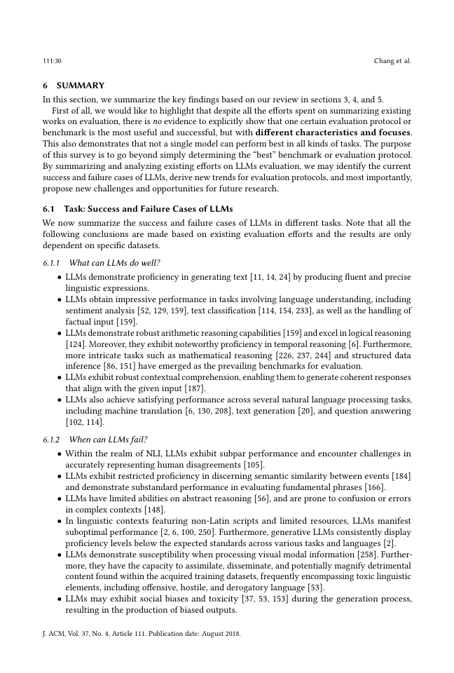
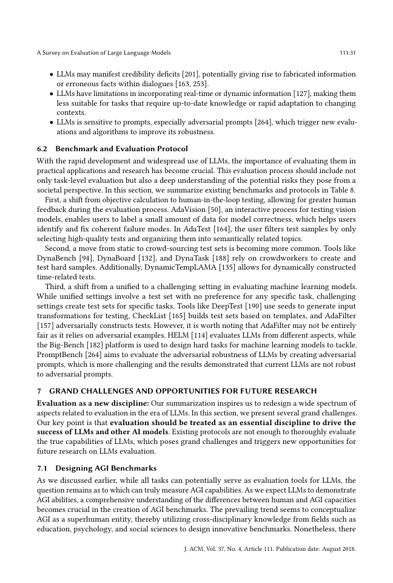
7 重大挑战与未来研究机会
把评估作为一门新学科：前面的总结启发我们，在大型语言模型时代重新设计评估相关的广泛环节。本文认为，评估应成为推动大型语言模型和其他人工智能模型成功的基础学科。现有协议不足以彻底衡量模型的真实能力，这带来了重大挑战，也创造了新的研究机会。
7.1 设计通用人工智能基准
所有任务都可以成为大型语言模型的评估工具，但哪些任务真正能够测量通用人工智能能力，仍然没有答案。既然我们期望大型语言模型展示通用人工智能能力，就必须理解人类能力与通用人工智能能力的差异，并据此设计基准。当前趋势似乎把通用人工智能设想为超越人类的实体，因而借鉴教育学、心理学和社会科学等跨学科知识设计基准。但许多问题仍未解决：测试构造是否应以人类价值观为起点，还是应当考虑其他视角？合适的通用人工智能基准仍有大量开放问题。
7.2 完整行为评估
理想的通用人工智能评估不应只有常见任务的标准基准，还应包括开放任务和完整行为测试。行为测试意味着模型需要在开放环境中被评估。例如，以大型语言模型作为中央控制器，让它控制机器人并在真实场景中执行任务，就可以观察模型行为。既然大型语言模型被视为通用智能机器，也应评估其多模态能力。完整行为评估与标准通用人工智能基准互为补充，应结合使用。
7.3 鲁棒性评估
大型语言模型已广泛进入日常生活，因此必须面对各种输入保持稳定。相同提示仅改变语法和表达方式，就可能让 ChatGPT 生成不同结果，说明当前模型对输入不够鲁棒。已有研究开始评估鲁棒性，但仍需扩大评估集的多样性、增加评估维度，并开发更高效的鲁棒性任务生成方法。鲁棒性的概念和定义也在不断变化，评估系统应持续更新，以适应伦理和偏见方面的新要求。
7.4 动态与演化评估
大多数人工智能任务依赖静态、公开的基准，数据集和协议通常完全可见。这有利于社区快速评估，却无法准确衡量能力快速演进的大型语言模型。随着模型规模和训练集增大，模型还可能记住公开基准，造成训练数据污染。因此，建立动态、不断演化的评估系统，是实现公平评估的关键。
7.5 有原则且可信的评估
设计评估系统时，必须确认系统本身具有完整性和可信度。可信计算的要求同样适用于评估系统，这一问题与测量理论、概率论等多个领域交叉。例如，如何确保动态测试真正产生分布外样本？目前相关研究仍然不足，未来不仅要审视评估算法，也要审视评估系统本身。
7.6 支持所有大型语言模型任务的统一评估
大型语言模型还有价值对齐、安全、验证、跨学科研究和微调等许多任务，评估系统需要覆盖这些能力。PandaLM 通过提供开源评估模型，帮助自动衡量微调性能。未来应让评估系统更加通用，能够在特定大型语言模型任务中充当可靠助手。
7.7 超越评估：增强大型语言模型
评估不是最终目标，而是改进的起点。评估之后，应当得到关于性能、鲁棒性和稳定性的结论。优秀的评估系统不应只输出基准分数，还应提供分析、建议和研发指导。PromptBench 不仅报告模型在对抗性提示下的鲁棒性，还通过注意力可视化说明对抗文本如何导致错误回答，并利用词频分析找出测试集中鲁棒和不鲁棒的词，为用户提供提示工程指导。
评估结果还可以直接用于模型增强。例如，研究者先考察大型视觉语言模型在长尾任务上的表现，发现当前模型存在局限，再探索不同方法提升这些任务的性能。评估之后的增强工作能够帮助构建更好的大型语言模型，未来仍有很大空间。
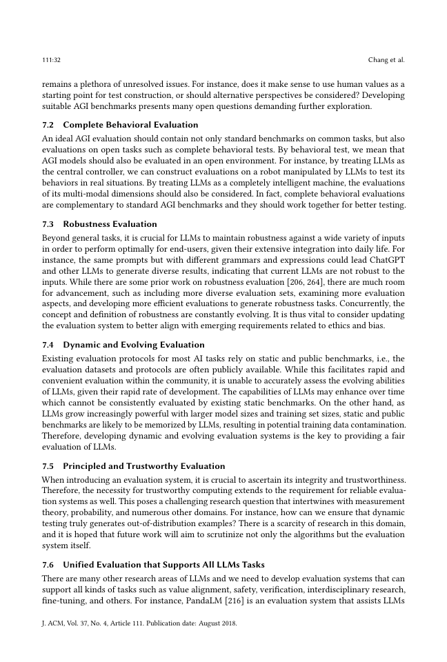
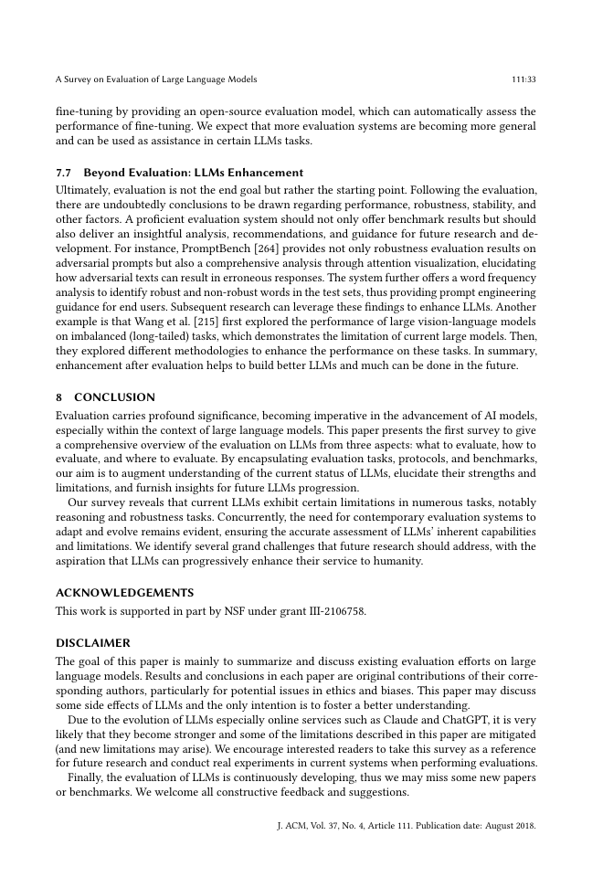
8 结论
评估对人工智能模型发展具有深远意义，在大型语言模型背景下尤其不可或缺。本文从“评估什么、如何评估、在哪里评估”三个方面，对大型语言模型评估进行了综合综述；通过总结评估任务、协议和基准，本文旨在帮助读者理解大型语言模型的现状，认识它们的优势和局限，并为未来发展提供洞见。
综述显示，当前大型语言模型在许多任务上仍存在局限，尤其是推理和鲁棒性任务。同时，评估系统必须不断适应和演化，才能准确衡量模型固有的能力与限制。本文提出了未来研究需要面对的若干重大挑战，希望大型语言模型能够逐步更好地服务人类。
致谢
本工作部分得到美国国家科学基金会 III-2106758 项目资助。
免责声明
本文主要用于总结和讨论大型语言模型的已有评估工作。每篇论文中的结果和结论，特别是关于伦理与偏见的潜在问题，均属于相应论文作者的原创贡献。本文讨论大型语言模型可能产生的副作用，唯一目的在于促进更好的理解。
由于大型语言模型不断演化，尤其是 Claude、ChatGPT 等在线服务持续更新，模型能力可能增强，本文描述的部分局限也可能被缓解，同时还可能出现新的局限。读者在开展评估时，应把本文作为未来研究参考，并在当前系统上进行真实实验。
大型语言模型评估仍在持续发展，本文可能遗漏新的论文或基准。作者欢迎建设性的反馈和建议。
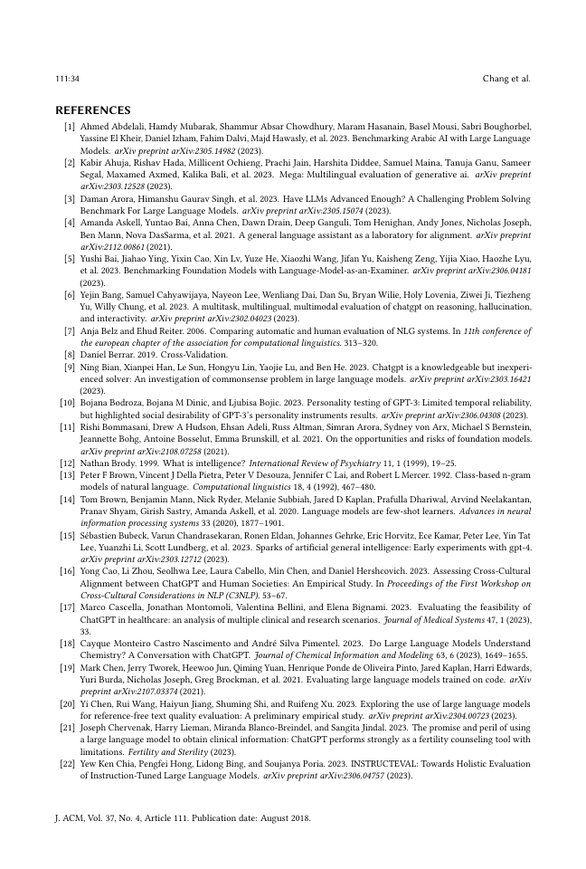
参考文献
参考文献共 269 条，原文密集排版，为保持作者、题名、出版信息、链接和编号的完整性，以下按原 PDF 第 35—45 页逐页保留截图。
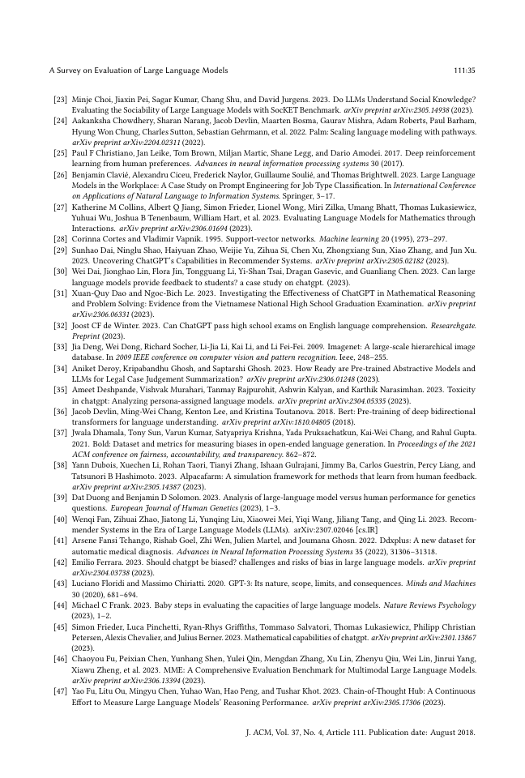
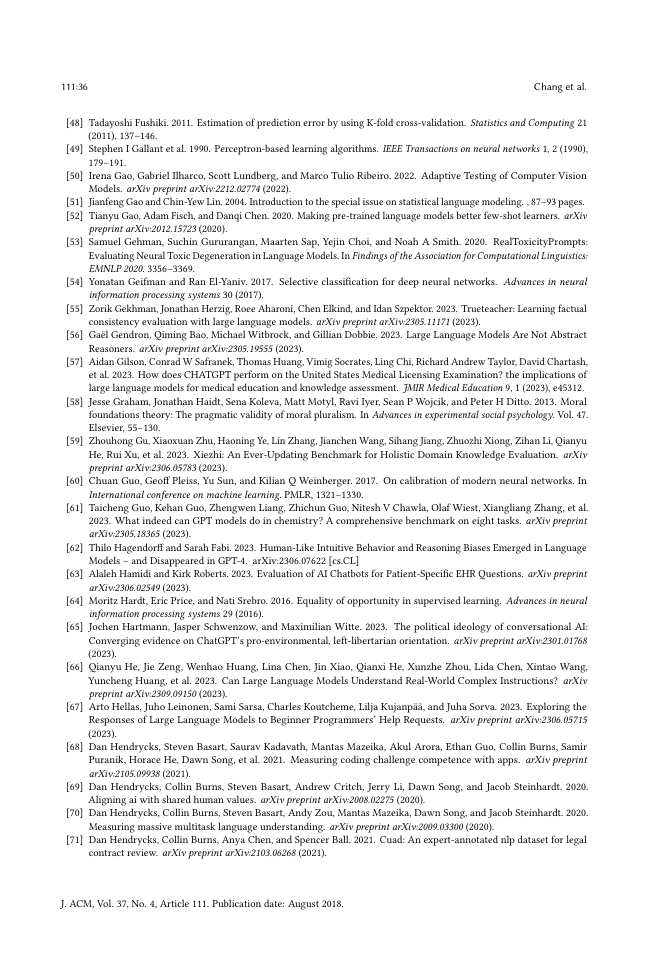
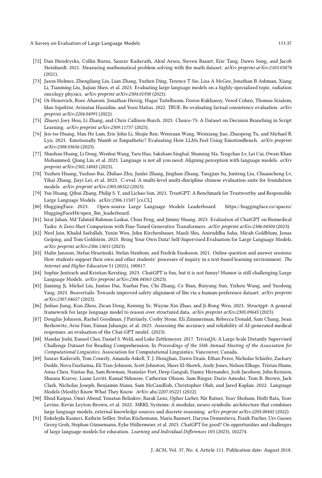
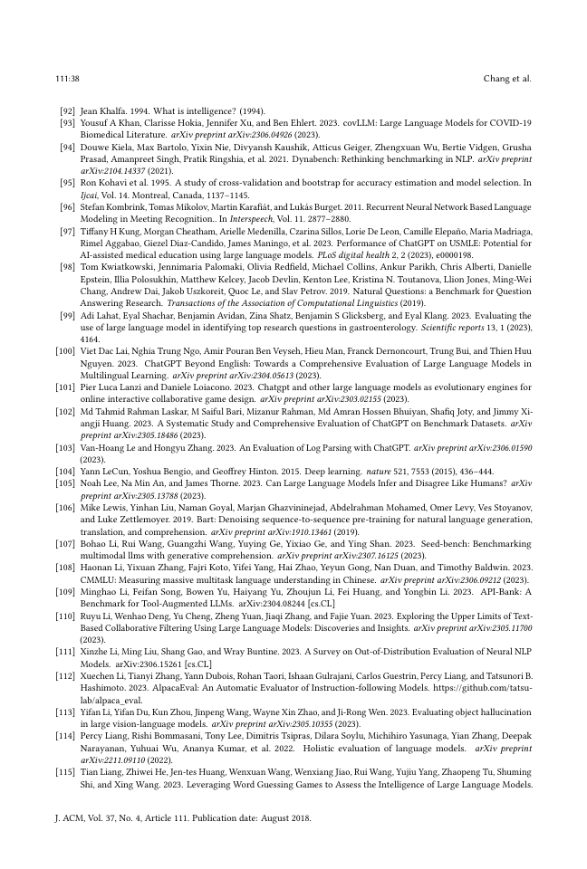
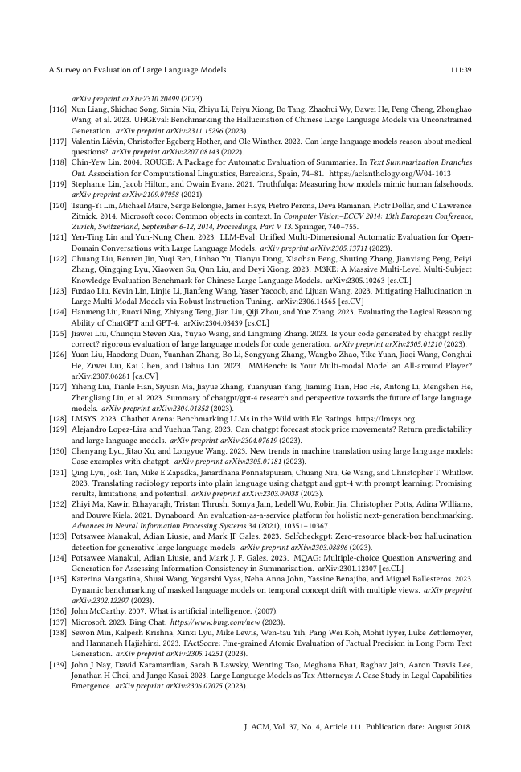
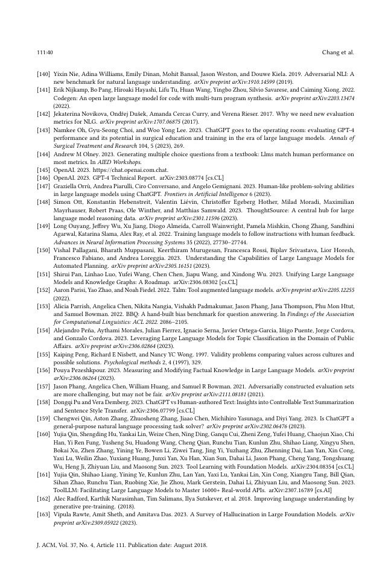
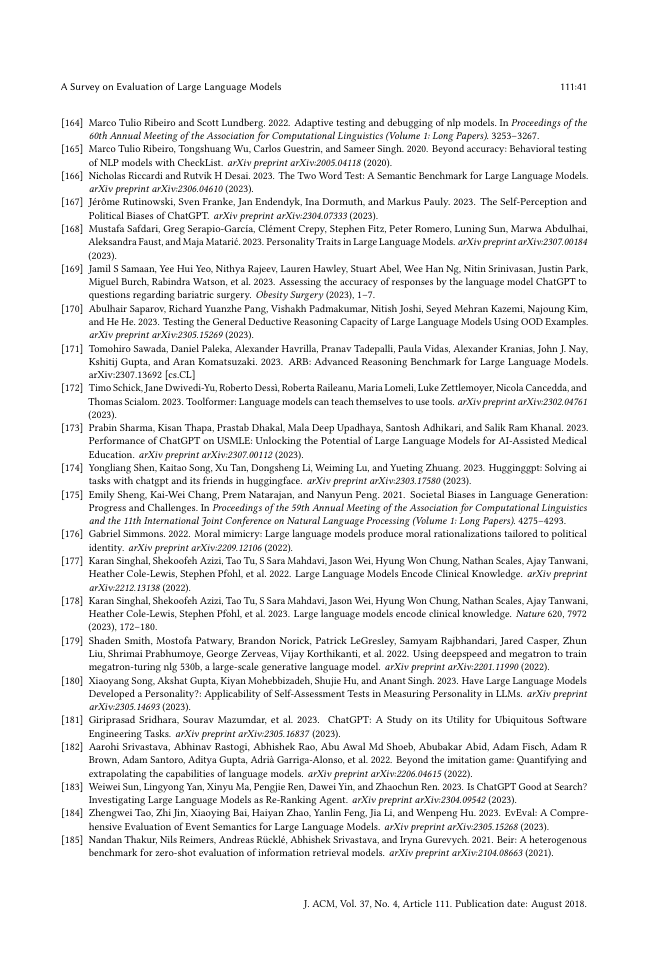
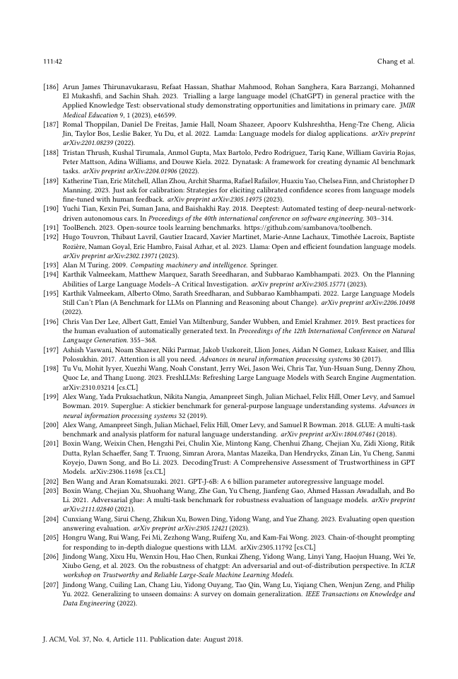
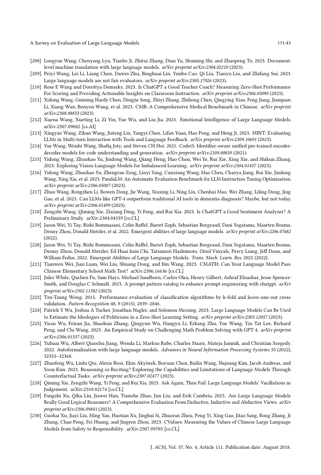
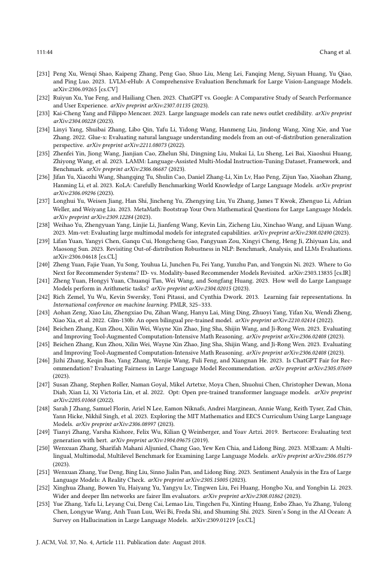
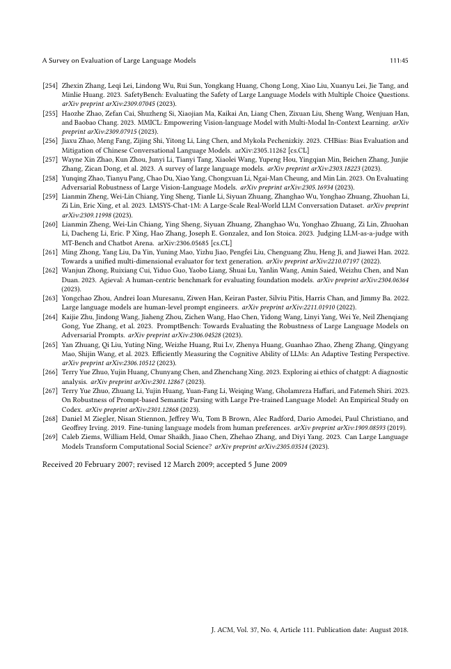